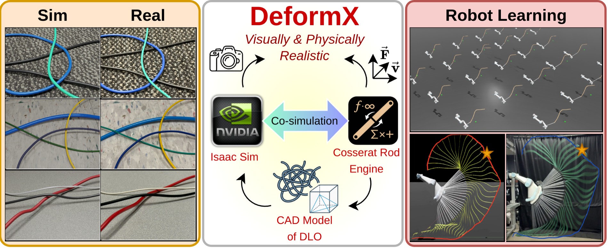
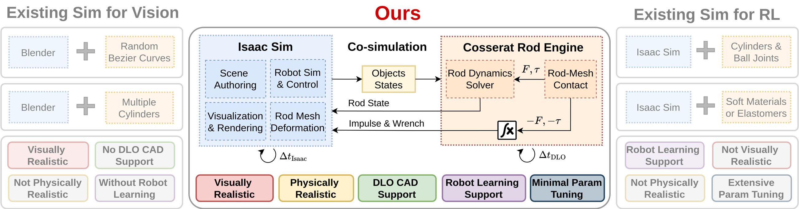
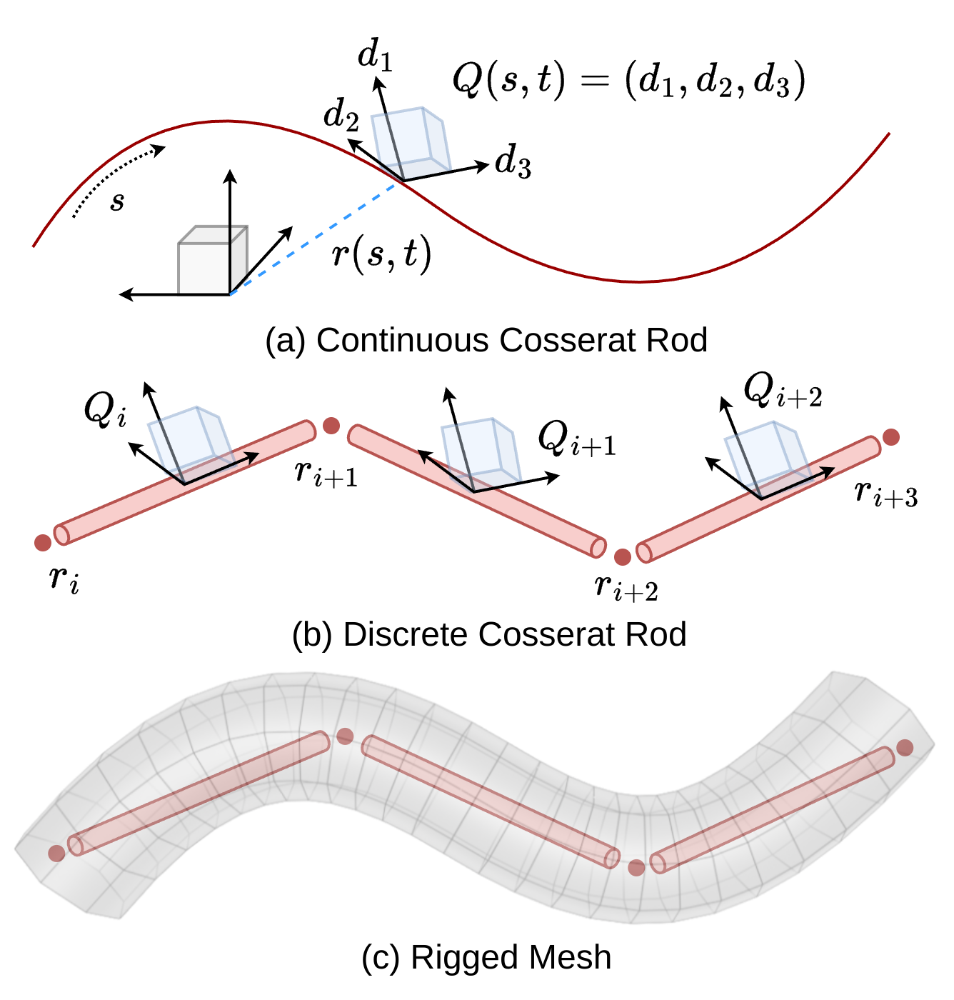
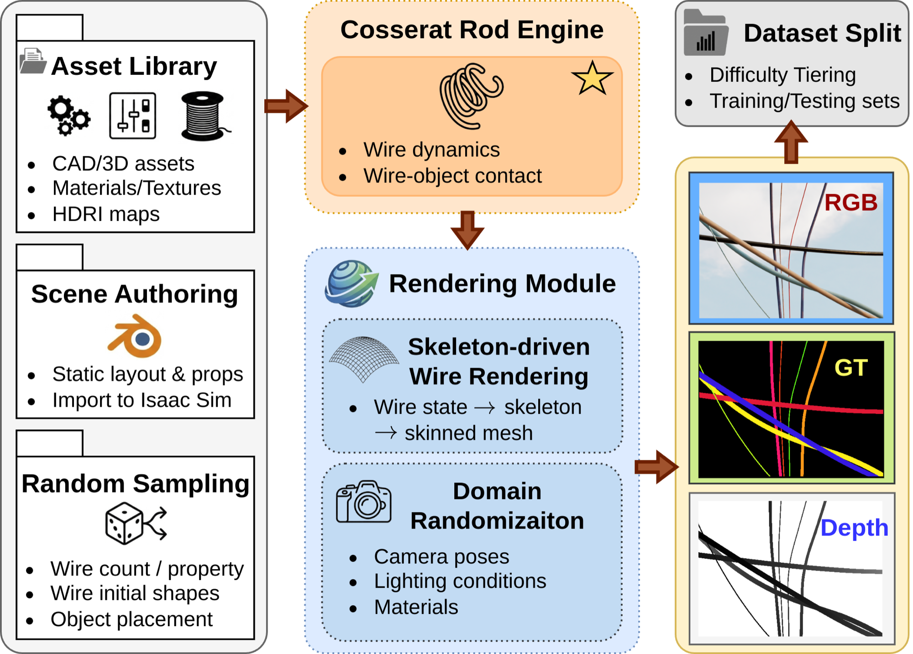
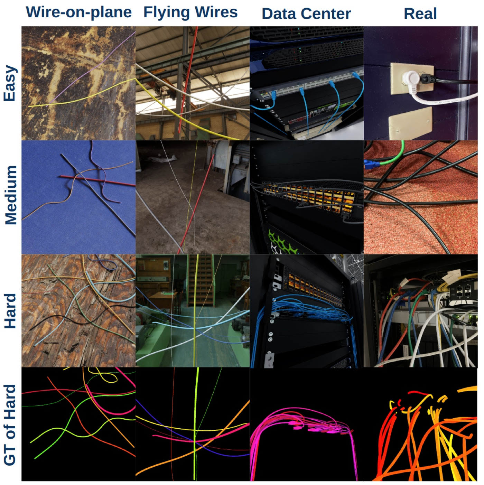
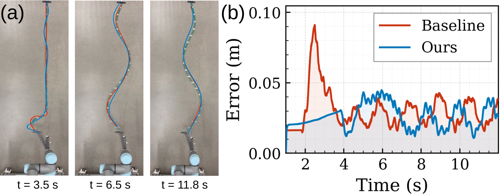
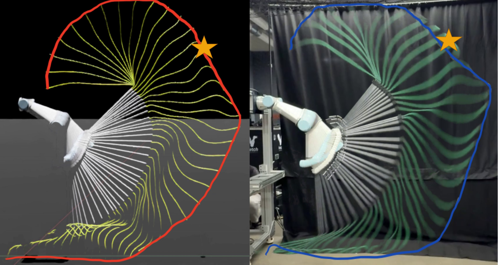

Physical Validation
Sim matches reality — knots, twist, and free-form contact
We validate physical fidelity with two real-world experiments whose parameters come from factory material specifications, not manual tuning.

Coupling a dedicated Cosserat rod engine with NVIDIA Isaac Sim for DLO simulation that is both physically faithful and visually realistic — built for perception and robot learning.
1The Robotics Institute, Carnegie Mellon University · 2Dept. of Mechanical Engineering, CMU · 3Shanghai Jiao Tong University · 4Zhiyuan College, SJTU · 5Harvard University
†Equal contribution.

Deformable linear objects (DLOs) such as wires, cables, and ropes are common in robotic manipulation tasks, yet simulating them with both visual realism and physical accuracy remains challenging. Existing visual simulation methods typically rely on procedural geometric primitives that lack physically grounded deformation behavior, while physics-based approaches with robot-learning support often approximate DLOs as rigid-link chains or generic soft bodies — failing to accurately capture the bending, twisting, and shear mechanics of slender elastic structures.
In this work, we introduce DeformX, a co-simulation framework that integrates a dedicated Cosserat rod physics engine with NVIDIA Isaac Sim, enabling DLO simulations that are both physically faithful and visually realistic. Our Cosserat rod engine simulates the dynamics and self-collisions of DLOs, and contact interactions with arbitrary free-form meshes. To achieve high-fidelity visualization, we employ mesh skinning to map discrete rod deformations onto imported CAD models. To the best of our knowledge, DeformX is the first framework for DLO simulation that unifies realistic visualization, principled physics, and compatibility with robot-learning pipelines.
We demonstrate its versatility across synthetic data generation and policy learning for DLO manipulation, and validate visual and physical fidelity through comparisons against real-world experiments. Notably, fine-tuning SAM3 on DeformX-generated data yields a 10.2% mAP@75 improvement in real-image wire segmentation, and a rope-swinging policy trained entirely in DeformX achieves a mean target-hitting error of 6.6 cm on a UR5e manipulator in real-world trials — highlighting strong sim-to-real transfer.
The Cosserat rod engine governs all DLO dynamics, self-collisions, and rod–mesh contact; Isaac Sim handles rigid bodies, robots, control, and photorealistic rendering. A multi-rate scheme keeps the two tightly and stably coupled across very different time scales.

The rod engine replicates Isaac Sim's semi-implicit Euler integration to substep DLO dynamics at ~10⁻⁵ s within each ~10⁻² s Isaac step, then returns integrated impulses and wrenches for stable bidirectional coupling.
Building on PyElastica's penalty contact, we add closest-point queries against arbitrary meshes — accelerated by a BVH and AABB broad-phase pruning, with a repulsion margin that prevents deep penetration under large time steps.
Discrete Cosserat rod deformations drive a skinned tubular mesh every Isaac step, so high-resolution CAD assets deform in full consistency with the underlying physics — yielding CAD-quality, reusable DLO visuals.

We model a DLO as a slender elastic rod under Cosserat rod theory, capturing all deformation modes of a 1-D continuum — stretching, shearing, bending, and twisting — in a unified formulation.
Dynamics follow conservation of linear and angular momentum, with material behavior set by physically meaningful parameters such as Young's modulus and shear modulus. This establishes a direct link between simulation behavior and real material properties, enabling principled calibration instead of heuristic joint-stiffness tuning.
The engine ships as a Python module embedded in Isaac Sim's scripting environment, supporting both interactive UI workflows and headless execution — a single pipeline from scene authoring to physics and photorealistic rendering.
We validate physical fidelity with two real-world experiments whose parameters come from factory material specifications, not manual tuning.
Using the framework, we generate 32,000 rendered images across 300+ independent simulation runs, with per-wire instance masks, per-pixel depth, and easy / medium / hard difficulty tiers across three scenario categories: wire-on-plane, flying wires, and data center.


Table 1. WireSeg-32k versus existing DLO datasets.
| Dataset | Physics Realism |
Instance Label |
CAD Support |
Visually- grounded |
Images |
|---|---|---|---|---|---|
| HANDLOOM | ✗ | ✗ | ✗ | ✗ | 30k |
| FASTDLO | ✗ | ✓ | ✗ | ✗ | 32k |
| Fresnillo et al. | ✓ | ✗ | ✗ | ✓ | 25k |
| Zanella et al. | ✗ | ✗ | ✗ | ✗ | 28.5k |
| ISCUTE | ✗ | ✓ | ✓ | ✓ | 28k |
| WireSeg-32k (Ours) | ✓ | ✓ | ✓ | ✓ | 32k |
“Physics realism”: physics-based DLO deformation during generation. “Instance label”: per-object masks. “CAD support”: DLOs as free-form meshes. “Visually grounded”: rendered in realistic image-based backgrounds.
Table 2. Fine-tuning SAM3 on WireSeg-32k. We report dataset-level F1@75 and COCO-style mAP@75 (higher is better) across difficulty tiers, the full synthetic set, and a held-out real test set.
| Model | Hard (Syn) | Medium (Syn) | Easy (Syn) | Total (Syn) | Total (Real) | |||||
|---|---|---|---|---|---|---|---|---|---|---|
| F1@75 | mAP@75 | F1@75 | mAP@75 | F1@75 | mAP@75 | F1@75 | mAP@75 | F1@75 | mAP@75 | |
| SAM3 (Base) | 0.179 | 0.066 | 0.446 | 0.310 | 0.803 | 0.735 | 0.409 | 0.290 | 0.296 | 0.157 |
| SAM3 + LoRA | 0.225 | 0.102 | 0.512 | 0.404 | 0.850 | 0.816 | 0.465 | 0.365 | 0.314 | 0.173 |
| Δ (LoRA − Base) | +25.7% | +54.5% | +14.8% | +30.3% | +5.9% | +11.0% | +13.7% | +25.7% | +6.1% | +10.2% |
Off-the-shelf SAM3 is run in text-prompt mode with the prompt “cable”. LoRA adapters (rank 16, α=32) are inserted into the attention projections; 5 epochs, lr 1×10⁻⁵, effective batch size 16. A complementary set of 300 in-the-wild real images with manual annotations is used for the real-world evaluation.
Dynamic “whipping” amplifies modeling error: small inaccuracies in bending, torsion, and contact cause large tip-trajectory deviations. We use a planar hit-target rope-swinging benchmark to stress-test sim-to-real transfer, training PPO with everything fixed except the DLO backend.


Table 3. Hit-target results — minimum tip-to-goal distance dmin (cm). Real-world results are mean ± std over n = 10 repeated executions per goal.
| Target Point | Method | Sim dmin | Real (n=10) dmin |
|---|---|---|---|
| (0, 200, 230) | Baseline | 4.9 | 15.1 ± 6.1 |
| DeformX (Ours) | 4.2 | 6.6 ± 4.7 | |
| (0, 200, 150) | Baseline | 4.4 | 25.9 ± 8.9 |
| DeformX (Ours) | 1.4 | 7.3 ± 1.2 | |
| (0, 170, 50) | Baseline | 4.3 | 30.4 ± 14.3 |
| DeformX (Ours) | 3.3 | 5.8 ± 3.2 |
Both simulators achieve low in-sim error, but only DeformX transfers reliably to the real robot — evidence that physically accurate bending, torsion, and contact are critical for sim-to-real transfer in dynamic rope swinging.
@misc{yang2026deformx, title = {DeformX: A Versatile Co-Simulation Framework for Deformable Linear Objects}, author = {Yang, Yi and Fei, Xiang and Wang, Lehong and Li, Chenhao and Dai, Zilin and Kou, Henry and Choset, Howie and Li, Lu}, note = {Preprint. Under review}, year = {2026} }